Contents
- Functions
- Function Notation, Mapping & Graphs.
- Linear Function and its examples
- Quadratic Function and its examples
- Exponential Functions and their graphs.
- Exponential Growth & Decay
Unit 3 Preview (Oct. 22nd, 2026)
Goal: Students can preview Unit 3 and understand the meaning of Functions
Warm-up
Watch the video and answer the following questions
- Find what a function is and write it in your notebook
- Why are functions useful?
Classwork:
- Finish up the Summative test 2.
- Finish up the Notebook Check 5
Lesson 1 - Function (Oct. 23rd, 2026)
Goal: Students can understand the meaning of Function and can tell which is function or not.
Warm-up; Copy and solve the following question.
A function is a special relation where each member of the domain is matched with only one member of the range. The set of the first elements in a relation is called the domain of the relation. The set of the second element in a relation is called the range of the relation.
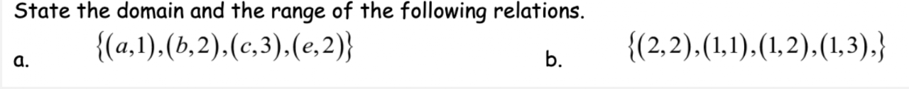
Class Activity;
- Watch the Videos and copy the notes
[Document: L1- Functions, Domain and Range — owner to add sharing link]
Lesson 1-2: Function Mapping (Oct. 26th, 2026)
Goal: Students can plot a graph of a function for a given domain.
Copy the following into your notebook:
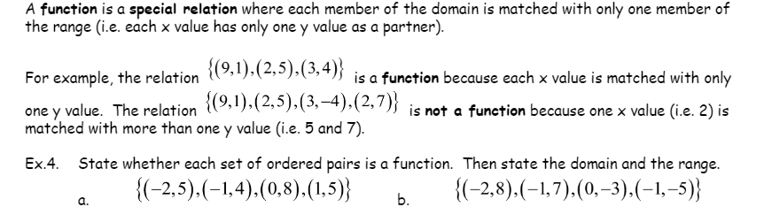
Warm-up;
- Create a table of values of Y = X+ 2 for the domain (-2, -1, 0, 1, 2)
- Plot the graph of a function f(x)= X + 2 for the domain (-2, -1, 0, 1, 2)
Class Activity;
Exercise:
- Create a table of values of Y = - X+ 4 for the domain (-2, -1, 0, 1, 2)
- Plot the graph of a function f(x)= - X + 4 for the domain (-2, -1, 0, 1, 2)
Lesson 2 - Function Notations (Oct. 27th, 2026)
Goal: Students can write function notation as f(x) and find the value of an input
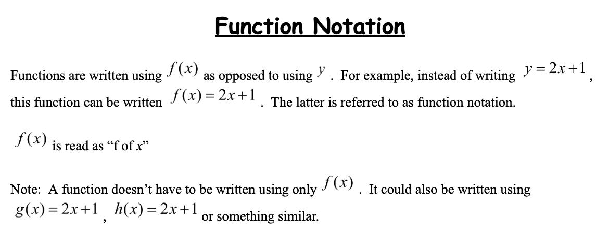
warm-up: Copy and solve the following into your notebook
- Find the value of the function below when x= 3.
f(x) = -3x +12 - Find g(5) when g(x)= 2x+5
Class Activity:
Take Unit 3 Linear Function Quiz on Canvas.
Watch the video and copy the notes down.
- Watch the video on the side and copy the notes
[Document: L2-Function Notation — owner to add sharing link]
Linear Function Graph Experiment (Oct. 28th, 2026)
Goal: Students can make a prediction based on the function pattern
Warm-up: Bring up Desmos on your computer.
- Plug the following functions on Desmos, and solve for x when F(x)=0
- F(x)= 1.2x + 5
- G(x) = x + 5
- H(x) = -2x + 5
- In your notebook, copy the three function graphs above, and describe the patterns in terms of rate (Slope)
Consider the Domain is from 0~5, and Range is from 0~12, and each function represents the population of animals.
Classwork: finish up Unit 3 Linear Function Quiz from yesterday
Lesson 3 - Linear Function and its Example (Oct. 29th, 2026)
Goal: Students can use the Excel Program to find a linear equation from a set of collected data.
Warm-up
- Find f(x) = ax + b, a linear function in which f(2)=1, f(-3)=11. What is a and b?
Class activity:
Open Google Sheets, and after this activity, upload the file to Unit 3 Finding an Equation, Canvas for assessment
- Plug the data into Google Sheets and find an equation.
(2,5) (3, 8) (5, 7) (8,7) (12,10)
Steps to find an equation
- Open your Google Sheets and plug the data in columns A and B accordingly.
- Highlight the data and,
- Click Insert Tap and choose Scatter Chart.
- Make sure to click on Use Column A as labels.
- Choose Customize tap and Click Series and then click Trendline
- Choose Label and pick Use Equation.
Lesson 3 - Linear Function and its example (Oct. 30th, 2026)
Goal: Students can take a real life example from a video.
Warm-up; Copy into your notebook and Think about it.
Mathematical Models
A mathematical model is a description of a system using mathematical concepts and language. Mathematical models are used not only in the natural sciences and engineering disciplines, but also in the social sciences. Linear modeling can include population change, telephone call charges, the cost of renting a bike, weight management, or fundraising. A linear model includes the rate of change (m) and the initial amount, the y-intercept b. After the model is written and a graph of the line is made, either one can be used to make predictions about behaviors.
- Watch and copy the real-life example and the calculations from the video.
- Finish the formative assessment from yesterday.
Lesson 3 - Linear Function and its example (Nov. 2nd, 2026)
Goal: Students can find real life examples of Linear Function.
Warm-up:
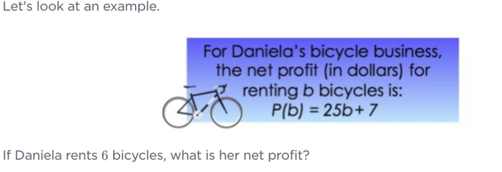
Class Activity:
- Open Google website, and type "word problems of linear functions" for real life examples.
- Choose one, and then save it into your document.
Lesson 4 - Quadratic Function and its example (Nov. 3rd, 2026)
Goal: Students will use Desmos to find functions.
Warm-ups: Copy and solve the problem below.
- Go to the website on your laptop, https://www.desmos.com/calculator
- Plug in the following function to graph the quadratic function into the blank box
f(x) = 2x^2 - 8x + 3. - Find the outputs when input x= 0, 1, 2, 3, 4
Watch the video and copy one of the quadratic real life example into your notebook.
Lesson 4 - Quadratic Function and its example (Nov. 4th, 2026)
Goal: Students can research a real-life example of a quadratic function.
Warm-up.
- Find two factors of this equation: x^2+6x+5=0, using desmos.
- Why is it meaningful and important to know the two intersecting points on the X-axis?
- Class Work: Find a real-life related Math problem of Quadratic Function into a paragraph.
Unit 3 Quadratic Function Quiz and Notebook Checking preparation (Nov. 5th, 2026)
Review: Use Desmos to solve the problems.
- Solve for value of x, to the nearest tenths, where F(x) =0
F(x)= 2x^2+ 4 x -3
- Class Work
- Go to Canvas to take the Unit 3 Quadratic Function Quiz.
- Notebook Checking Preparation.
Your notebook should include all the headings, warm-ups, videos, and reflections from Nov. 3rd ~ Nov. 12.
The dates and Contents are as follows- Nov. 3: Heading, warm-up, video, reflection
- Nov. 4: Heading, warm-up, video, reflection
- Nov. 5: Heading, warm-up, reflection
- Nov. 6: Heading, warm-up, video, reflection
- Nov. 7: Heading, warm-up, reflection
- Nov. 10: Heading, warm-up, reflection
- Nov. 11: Heading, warm-up, 2 videos, reflection
- Nov. 12: Heading, warm-up, reflection
Lesson 4 - Quadratic Function and its example (Nov. 6th, 2026)
Goal: Students can understand quadratic function from a real-life example.
Warm-up: Copy and solve the problem below.
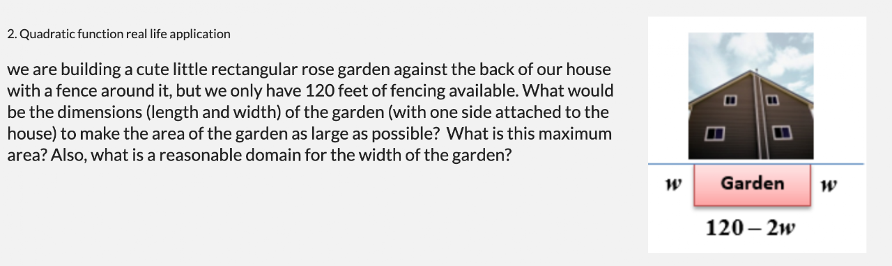
Class Activity: Use "Desmos.com/calculator" to solve the same problem above
Class Activity (Nov. 9th, 2026)
Goal: Students can find a function, using technologies.
Warm-up:
Q. A cereal company finds that if it spends $40,000 on advertising, then 100,000 boxes of cereal will be sold, and if it spends $60,000 then 200,000 boxes will be sold. How much advertising is needed to sell 300,000 boxes of cereal?
(a) Write down a linear function that relates the amount x dollars spent on ads to the number f(x) of boxes sold.
(b) Solve to find how much advertising is needed to sell 300,000 boxes of cereal.
Activity: Unit 3 Linear Function Activity
- Finding the Function above, using Google Sheets.
- What is your salary function?
- How do we express the base sale without advertisement in the function?
Notebook Check 6 grades (Nov. 10th, 2026)
Goal: students can review their notebook and put the grade in Canvas
The dates and Contents are as follows
- Nov. 3: Heading, warm-up, video, reflection
- Nov. 4: Heading, warm-up, video, reflection
- Nov. 5: Heading, warm-up, reflection
- Nov. 6: Heading, warm-up, video, reflection
- Nov. 7: Heading, warm-up, reflection
- Nov. 10: Heading, warm-up, reflection
- Nov. 11: Heading, warm-up, 2 videos, reflection
- Nov. 12: Heading, warm-up, reflection
Notebook Check 6 grades
- 8 headings: Per heading, 2.5 points
- 8 warm-ups: per warm-up, 5 points
- 5 videos: per video, 6 points
- 8 reflections: per reflection, 1.25 points
Put the grade on Canvas before the notebook check 6 with teacher.
Example of grading
8 headings x 2.5 = 20
8 warm-ups x 5 = 40
5 videos x 6 = 30
8 reflections x 1.25= 10
Total: 20+40+30+10=100 Pts.
Lesson 4 - Quadratic Function and its real life example (Nov. 11th, 2026)
Goal: Students can use Google Spreadsheet to find Quadratic function.
Warm-up
Q. A company produces and sells handcrafted furniture. The profit P(x) (in dollars) depends on the number of furniture pieces x they sell. The company has found that their profit follows a quadratic relationship due to fixed costs and diminishing returns. Find the business function model, using Google Sheets.
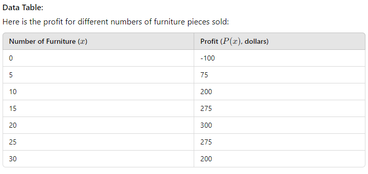
Lesson 4 - Quadratic Function Research (Nov. 12th, 2026)
Goal: Research the definition and explanation of Quadratic Function
Warm-up: Copy below
Quadratic functions are more than algebraic curiosities—they are widely used in science, business, and engineering. The U-shape of a parabola can describe the trajectories of water jets in a fountain and a bouncing ball, or be incorporated into structures like the parabolic reflectors that form the base of satellite dishes and car headlights. Quadratic functions help forecast business profit and loss, plot the course of moving objects, and assist in determining minimum and maximum values. Most of the objects we use every day, from cars to clocks, would not exist if someone, somewhere, hadn't applied quadratic functions to their design.
We commonly use quadratic equations in situations where two things are multiplied together, and they both depend on the same variable. For example, when working with area, if both dimensions are written in terms of the same variable, we use a quadratic equation. Because the quantity of a product sold often depends on the price, we sometimes use a quadratic equation to represent revenue as a product of the price and the quantity sold. Quadratic equations are also used when gravity is involved, such as the path of a ball or the shape of cables in a suspension bridge.
Class Activity
- Create a Word doc with the title Unit 3, Quadratic Function Paragraph
- From the internet, collect the definition and explanation of the quadratic Function. Pls. make sure to add the formula and its explanation.
Review Linear Function (Nov. 13th, 2026)
Goal: Student can review and write a paragraph
Formative Assessment:
- Create a Word doc with the title Unit 3 Linear Function Paragraph
- From the internet,
In the first paragraph, collect the definition and explanation of the linear Function. Pls. Make sure to add the formula and its explanation. - Add the second paragraph, which includes a real-life related math problem about a Linear Function, with the calculation attached.
- Upload them to Canvas under Unit 3 Linear Function Paragraph
Review Quadratic Function (Nov. 16th, 2026)
Goal: Student can review and complete missing tasks
Formative Assessment:
- Create a Word doc with the title Unit 3 Quadratic Function Paragraph
- From the internet,
In the first paragraph, collect the definition and explanation of the quadratic Function. Pls. Make sure to add the formula and its explanation. - Add the second paragraph, which includes a real-life related math problem about a Quadratic Function, with the calculation attached.
- Upload them to Canvas under Unit 3 Quadratic Function Paragraph
- Copy into your notebook one real-life example question of a quadratic function from this website: example1, example 2
- Real-life examples of Quadratic Function: https://content.nroc.org/Algebra.HTML5/U10L2T1/TopicText/en/textbook.html
Lesson 5 - Exponential Function (Nov. 17th, 2026)
Goal: Student can understand the meaning of Exponential Function and its shapes
warm-up: Copy and solve the problem.
Q1. Using the desmos.com/calculator,
- Sketch the graph of F(x)= 2x
- Sketch the graph of F(x)= 3*2x
- Sketch the graph of F(x)=2^x.
- Sketch the graph of F(x)= 3*2^x
Q2. Copy the following.
Exponential Function (from Math insight): The exponential function is one of the most important functions in mathematics (though it would have to admit that the linear function ranks even higher in importance). To form an exponential function, we let the independent variable be the exponent. A simple example is the function f(x)=2^x.
As illustrated in the above Q1. graph of f(x)=2^x. the exponential function increases rapidly. Exponential functions are solutions to the simplest types of dynamical systems. For example, an exponential function arises in simple models of bacteria growth, Compound interest in money.
- Consider also the function f(x)=0.5^x
Lesson 5 - Exponential Function and its example (Nov. 18th, 2026)
Goal: Student can understand Exponential growth.
Q1. Recall the following Function, F(x)= 3*2^x, from yesterday and copy the following Formula.
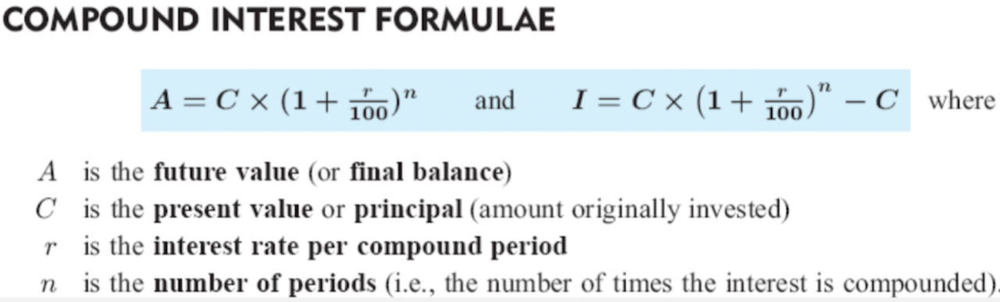
Q2. Calculate the final balance of a $10,000 which you deposit in a bank at a 6% compound interest rate annually for 12 years. (Use the formula or desmos)
Lesson 5 - Real life example of Exponential Function (Nov. 19th, 2026)
Goal: Student can understand Exponential growth.
Warm-up; copy and solve the problem below. Use desmos.com/calculator.
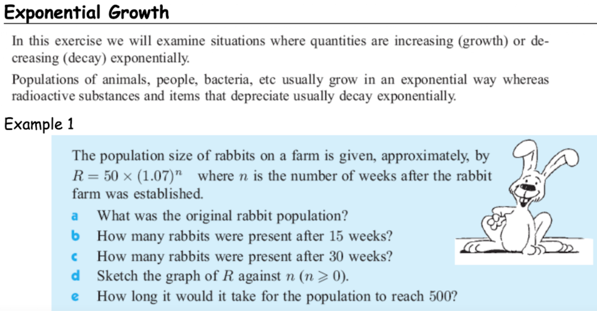
Unit3 Review 1: Linear Functions (Nov. 20th, 2026)
Goal: students can review what Linear function is and how it is used in a real-life situation.
Warm-up: Copy and solve
Problem: Cost Function for Producing Widgets
A small company produces custom widgets. The factory's fixed costs (like rent, machinery, etc.) are $5000 per month. Due to material and labor costs, each widget costs an additional $5 to produce.
Q1. Let's say the company wants to know the total cost if they produce 200 widgets.
If the company sells each widget for $15, how many widgets must they sell to cover all costs without making a profit or loss?
Q2. Let's denote the selling price per widget as SP = $15.
Revenue (R) from selling x widgets would be:
Q3. What is the break-even point for profit?
Unit3 Review 2: Quadratic Functions (Nov. 30th, 2026)
Goal: students can review what Quadratic function is and how it is used in a real-life situation.
Warm-up: Copy and solve
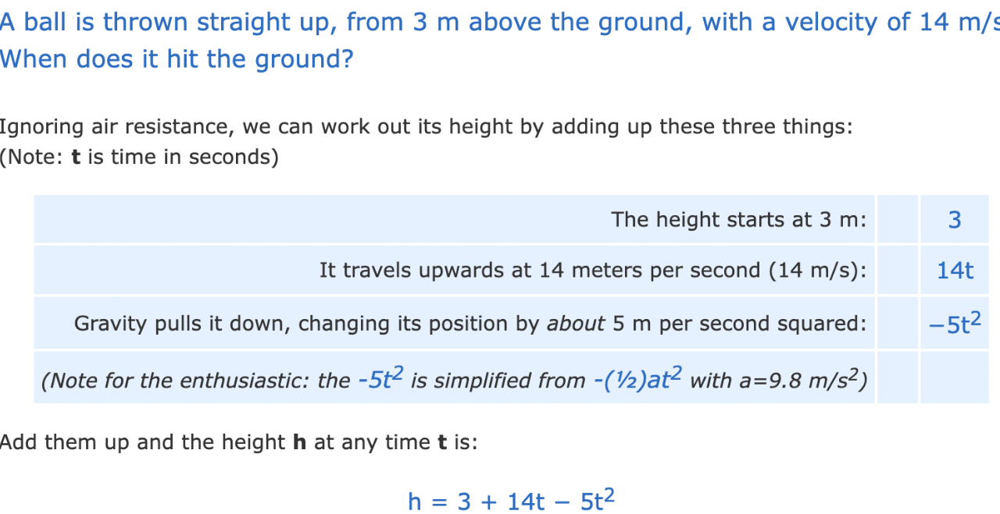
Q1. when t=1, how high is the ball?
Q2. when is it that the ball is the highest from the ground?
Q3. When is it that the ball hits the ground?
Unit3 Review 3: Exponential Functions (Dec. 1st, 2026)
Goal: students can review exponential function and how it is used in a real-life situation.
Warm-up: Copy and solve
Q. A scientist begins with a culture of Escherichia coli bacteria with an initial count of 100 cells. The population of bacteria doubles every 20 minutes. How many bacteria will there be after 2 hours?
Classwork: Complete any missing assignments during this week.
Unit 3 Final Exam preparation 1 (Dec. 2nd, 2026)
Goal: Students can prepare for the Final Exam
- Choose a topic; Linear Function, Quadratic Function, Exponential Function
- On the Word document, collect information: Definition & Explanation (+Formula) for the first paragraph
- Consider all the headings, titles, citations, and other writing formats.
- Font: Times New Roman
- Font size: 12
- The first line indentation
- Line spacing: doubled
- Two citations at the end of the paragraph.
Unit 3 Final Exam preparation 2 (Dec. 15~16th, 2025)
Goal: Students can prepare for the Final Exam
Instructions for today.
Choose a topic; Linear Function, Quadratic Function, Exponential Function
If you have finished the first paragraph (definitions & explanations of the topic) then now you will add a real life example.
For your research, use A.I. or
type "real-life examples of a Linear Function", Quadratic Function, or Exponential Function into the Google search box.
Click images and looks through the photos or click on math websites
Keep searching until you find a good one on different math websites.
Study the example until you fully understand it.
In the same Word document from yesterday, summarize the real-life example for the second paragraph.
Cite the source at the end of the paragraph.
Unit 3 Final Exam preparation 3 (Dec. 3rd, 2026)
Goal: Students can prepare for the Final Exam
On top of yesterday's work - the first two paragraphs,
- add your reflection in the third paragraph.
- Before you add your reflection under the second paragraph, try to explain or discuss the example in the third paragraph.
- Make sure you teach yourself about the math example before discussing for the reflection paragraph.
Make-up Days (Dec. 4th, 2026)
Goal: students can make up any missing assignments.
- Check for any missing assignments.
- Let your teacher know what you have made up for
- Check your grade until your teacher updates it.
- After today, December 18th, there will be no more acceptances for make-up work
2024 Mid Term Exam (Dec. 18th~19th, 2024)
For the Mid Term Exam today, Go to 2025 Mid Term Exam on Canvas
1. Choose a topic; Linear Function, Quadratic Function, or Exponential Function
2. On the Word document, collect information: Definition & Explanation (+Formula) for the first paragraph
3. Add a real-life example + Calculations for the second paragraph,
4. Your reflection on the example in the Third paragraph.
Make sure to add all the headings, titles, citations, and other writing formats.
- Consider the following for the rubric.
- Research skill (/20)
- Writing Formats (/20)
- Applying Math strategies (/20)
- Reflecting Skill (/20)
- Decision Making Skill (/20)
How to be a millionaire
Two further videos from the original page (“The Marshmallow Study Revisited” and “The True Story Of Ronald Read”) are unavailable — one is private and one cannot be played — so they are not embedded here.
Activity 3.
Exponential Function Application: Conclusion.
As illustrated in the above Q2. graph of f(x)=2^x, the exponential function increases rapidly compared to the graph of F(x)=2x. Exponential functions are solutions to the simplest types of dynamical systems. For example, an exponential function arises in simple models of bacteria growth, Compound interest in money.
- Consider also the function f(x)=0.5^x
Exponential Function Vs Logarithmic Function (Dec. 7th, 2026)
Goal: students can understand Logarithmic Function and can apply it into a real world example.
Q. What is Logarithm in terms of Exponent?
A logarithm is an exponent. A logarithm is an exponent which indicates to what power a base must be raised to produce a given number. This means the logarithm of 8 to the base 2. It is the exponent to which 2 must be raised to get 8.
- Draw the X, Y table of F(x)=2^x
As x increases by 1, F(x) increase 2 times. there for if the base is 10, and x increase by 1, then F(x) increases by 10 times. - Draw the graph of F(x)= 2^x
- Draw the X, Y table of F(x)= log to the base 2 of X
- Draw the graph of F(x)= log to the base 2 of X
a Real life application of Logarithm:
Q. The famous San Francisco Earthquake of 1906 measured 8.25 on the Richter scale and the 1989 earthquake in Newcastle, Australia, measured 5.50 on the Richter scale. How many times more intense was the San Francisco Earthquake than the one in Newcastle?
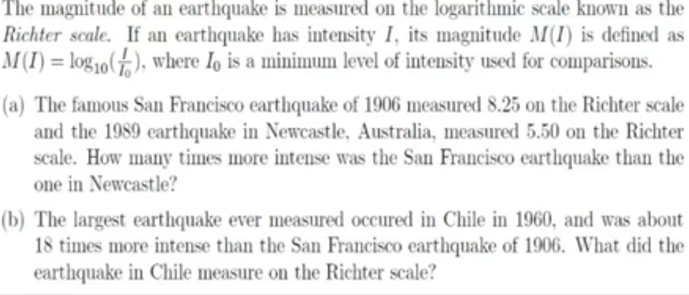
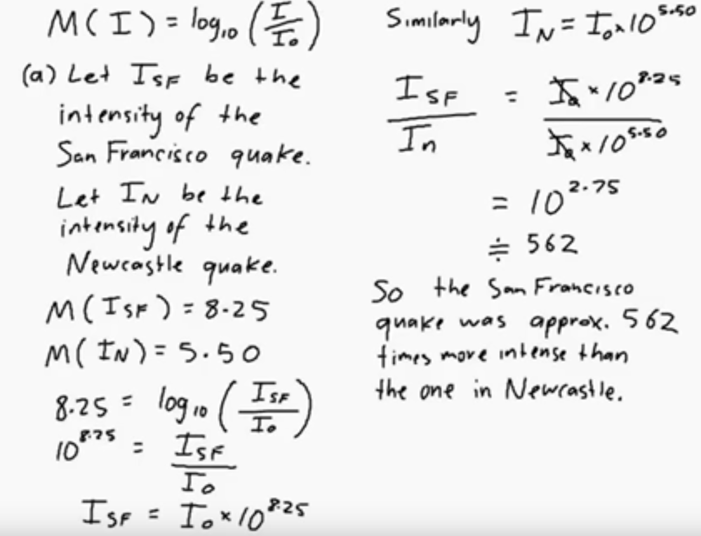
Rational Function (Dec. 8th, 2026)
Goal: students can understand Rational Function and can apply it into a real world example.
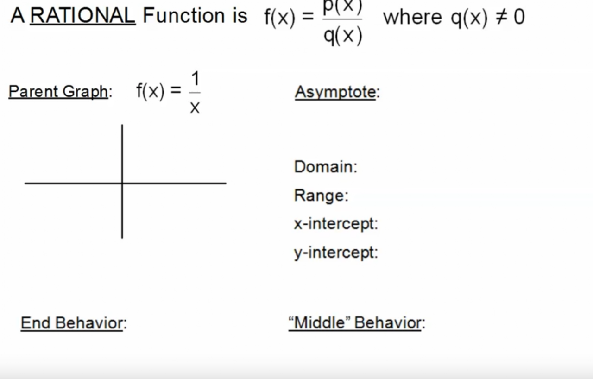
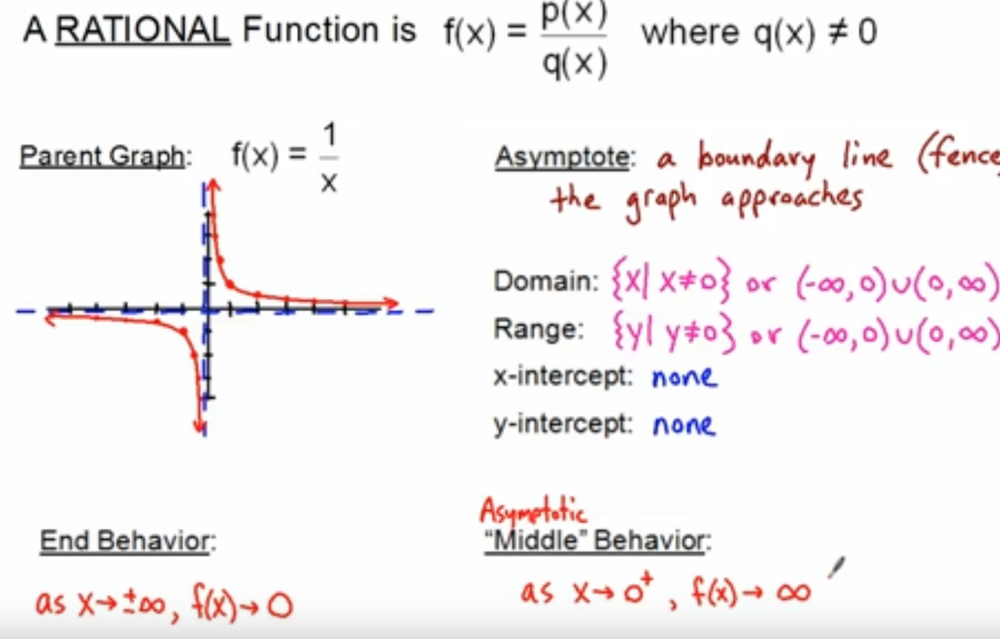